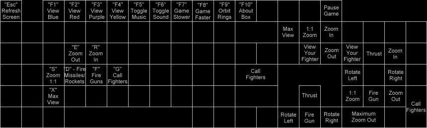

Key commands are used for controlling your ship and your view.

| Left Arrow: Rotate Ship to the Left | Right Arrow: Rotate Ship to the Right | Up Arrow: Apply forward thrust. | Down Arrow: Fire Gun |
| Home: Center view on your fighter | End: Restore default magnification | PgUp: Increase view magnification | PgDn: Decrease view magnification |
| F: Fire Gun | D: Fire Rocket/Missile | Esc: Refreshes the window | Pause: Pauses the game. |
| Ins: Maximum Zoom Out | E: Zoom Out | R: Zoom In | S: Zoom 1:1 |
| F1: Cycle through Blue fighters | F2: Cycle through Red fighters | F3: Cycle through Purple fighters | F4: Cycle through Yellow fighters |
| Enter: Summon all friendly fighters | Shift-F2: New Game | Shift-F3: Load saved game | Shift-F4: Save Game As |
| G: Summon all freindly fighters | Ctrl-N: New Game | Ctrl-O: Load saved game | Ctrl-S: Save Game As |
The mouse is used to select a ship or friendly structure. The display window will scroll automatically to keep the selected ship in view. When a friendly unit is selected, both the unit and its name on the ship list is highlighted white. The radar display shows the selected ship surrounded by a white box.
| Getting A Fast Start | Table Of Contents | Game Setup |